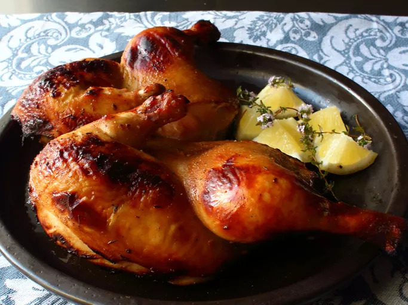

Buttermilk Barbecue Chicken

Description
Buttermilk is a very popular marinade for fried chicken, but for whatever reason, it isn't often used with other chicken cooking methods. Yogurt, a very similar product, is quite popular in grilled chicken marinades. So, why not use buttermilk? This goes great with coleslaw, potato salad, and a squeeze of lemon.
It takes a total of 7 hours and 5 minutes to make, and, being a whole chickent, will serve six people!
Ingredients
- 2 cups buttermilk
- ¼ cup brown sugar
- 1 tablespoon apple cider vinegar
- 4 cloves garlic, minced
- 1 teaspoon dried thyme
- 1 tablespoon ground black pepper
- 1 tablespoon smoked paprika
- 1 teaspoon ground cumin
- 1 teaspoon cayenne pepper
- 2 tablespoons kosher salt
- 1 (3 pound) whole chicken
Steps
- Whisk buttermilk, brown sugar, cider vinegar, garlic, thyme, pepper, paprika, cumin, cayenne, and salt together in a bowl.
- Trim wing flats from the chicken. Cut along both sides of the backbone from the tail to the neck; remove backbone. Make a 1/4-inch-deep cut through the piece of cartilage in the center. Open up both sides to reveal breastbone; lift out. Cut chicken in half through the center line.
- Place both halves in a resealable zip-top bag and pour in the buttermilk marinade. Place the bag in a bowl to catch any leaks. Press air out and seal. Marinate in the fridge for 6 to 18 hours.
- Preheat an outdoor grill for medium heat and lightly oil the grate. Remove chicken from marinade and transfer onto a paper towel-lined plate. Blot off excess marinade.
- Place chicken on the grill cut-side down, skin-side up; cover and cook for 20 minutes.
- Flip chicken over and continue grilling for 7 to 10 minutes. Flip once more and grill until no longer pink in the center, about 15 minutes more. An instant-read thermometer inserted into the thickest part of the thigh, near the bone, should read 165℉ (74℃).